Contents
- | Data loading |
- Loops for params and Background Rate
- Basic Plotting
- Declustering Procedure
- Background Rate Grids
- | Mapping Background Rate |
- Residual Analysis
- | Simulate loading |
- Reconstruct Background Events
- Drawing
- Writing In Catalog
- Forecasting Procedure loading
- | Forecasting Mapping |
- Some debates (Backevents)
| Data loading |
Space_GlobalHandel;
Data have been prepared and try next step || =============================================== || || Total 2000 events || || While 1712 events in the selected region || || And 288 events out of region || || =============================================== ||
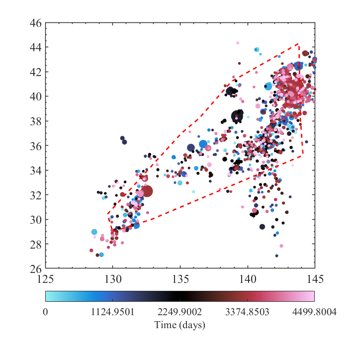
Loops for params and Background Rate
param0=[ 1 0.04 1.8 0.1 1.8 0.015 1.8 0.8];
% [paramNew,RateNew,Fai,AICNew]=Space_ETASModel(param0,'finite');
Basic Plotting
[Lamda]=Space_CLam(RateNew, paramNew); Space_TimeSequenceMapping(paramNew,Fai,RateNew,Lamda);
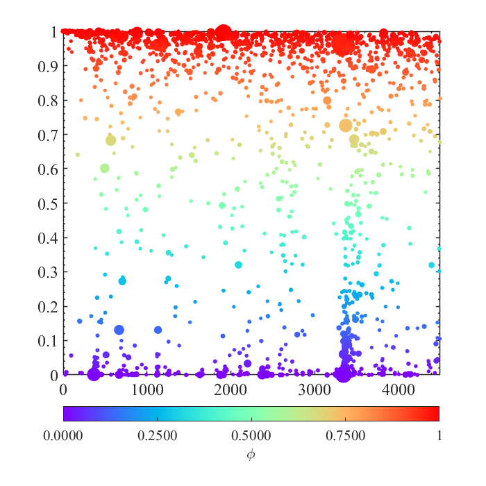
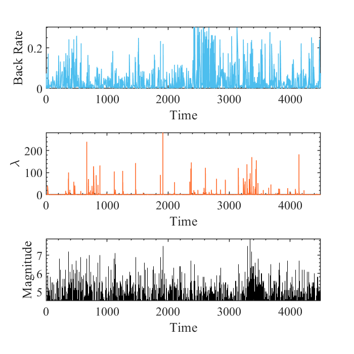
Declustering Procedure
[ind,rij]= Space_Decluster(RateNew, paramNew); [bkgd,trig]=Space_Trig_bkgd(RateNew, paramNew,Fai); Space_DeclusterMapping(ind,Fai);
There are 1096 events in Background There are 904 events Triggered
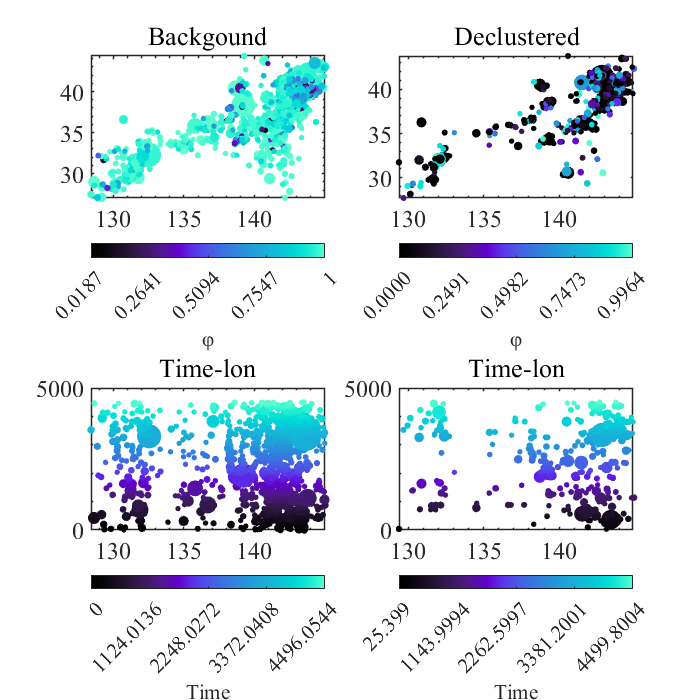
Background Rate Grids
[BackRate]=Space_OutBackRate(paramNew,Fai); [TrigRate]=Space_OutTrigRate(paramNew,Fai);
历时 1.003089 秒。 历时 1.002193 秒。
| Mapping Background Rate |
close all; Space_OutputMapping(BackRate,TrigRate,'eclipse');
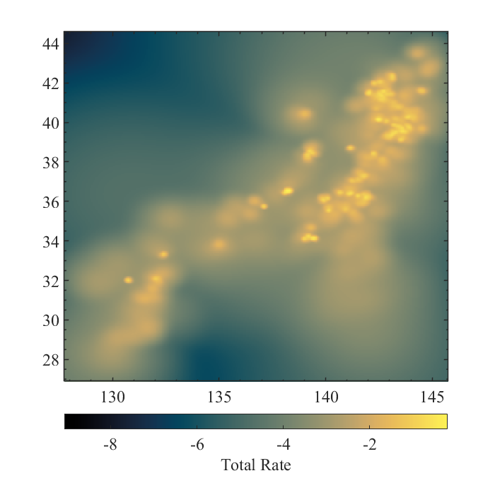
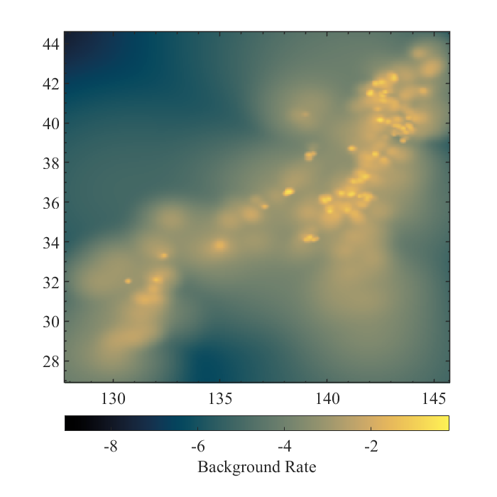
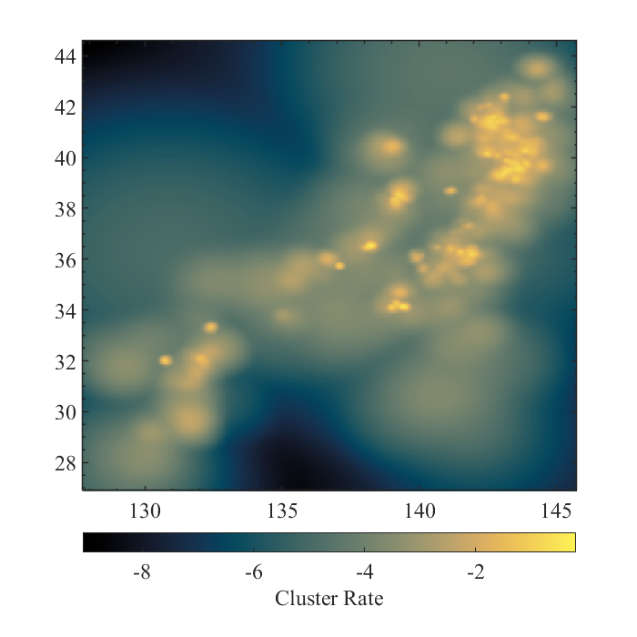
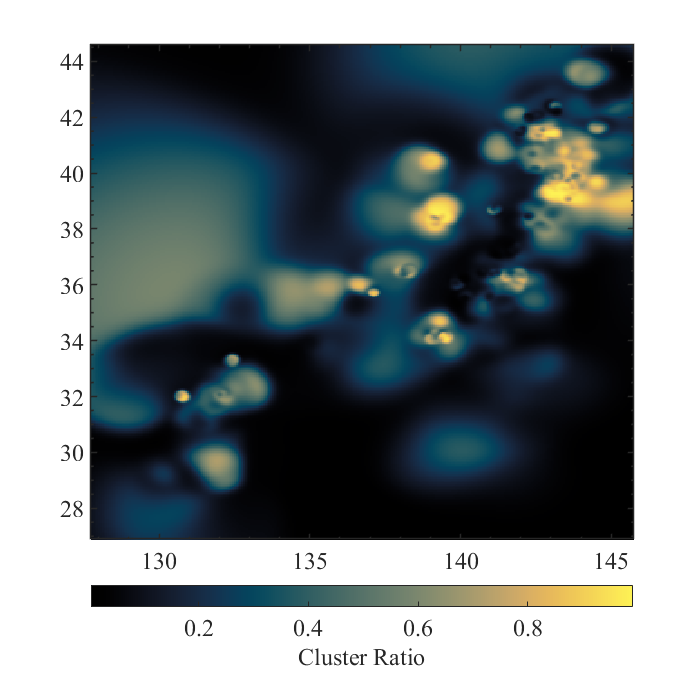
Residual Analysis
TransN=bkgd+trig; Space_RPP(TransN)
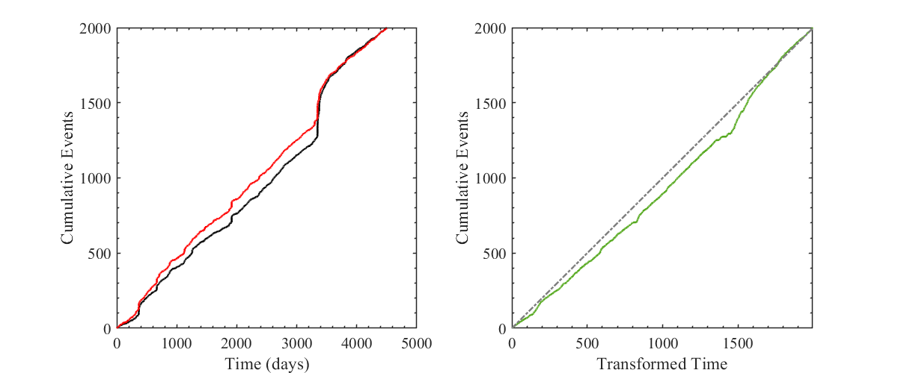
| Simulate loading |
%= = %= = %= = %= = % Params:[mu,A,alpha,c,p,D,q,gamma] % paramNew=[1.1882 0.16229 1.6852 0.038814 ... % 1.1642 0.0022916 1.8805 1.0853]; %===========================================
Reconstruct Background Events
Foretime=60; % predicted timespan (Means we use T.[tstart tend] and predict more) clc; Region='all'; % Region='select'; [Incat] = Space_SimulateBkgd(Foretime,Fai,paramNew,Region); % | Reconstruct the sequence of Aftershocks | [Loopcata]=Space_SimulateTrigLoop(Foretime,paramNew,Incat,Region);
After selected in the catalog : There are 15 background events ======== Background events is finished ======== b-value is 0.80 The Group Maxmag= 6.29 Triggering Ability is= 1.60 After triggered in the catalog : There is 24 number of triggering events Further : While there are 17 events in the time spans Further : While there are 17 events in the Area strictly b-value is 0.80 The Group Maxmag= 5.89 Triggering Ability is= 0.35 After triggered in the catalog : There is 6 number of triggering events Further : While there are 4 events in the time spans Further : While there are 4 events in the Area strictly b-value is 0.80 The Group Maxmag= 4.97 Triggering Ability is= 0.50 After triggered in the catalog : There is 2 number of triggering events Further : While there are 2 events in the time spans Further : While there are 2 events in the Area strictly b-value is 0.80 The Group Maxmag= 4.72 Triggering Ability is= 0.50 After triggered in the catalog : There is 1 number of triggering events Further : While there are 1 events in the time spans Further : While there are 1 events in the Area strictly b-value is 0.80 ========= Triggered events is finished ========= Both loop 4 generations And Create 24 events ========= Loading is finished =========
Drawing
Space_SimulateMapping(Incat,Loopcata)
If there are events which Mags larger than Initial Catalog; they will be plotted
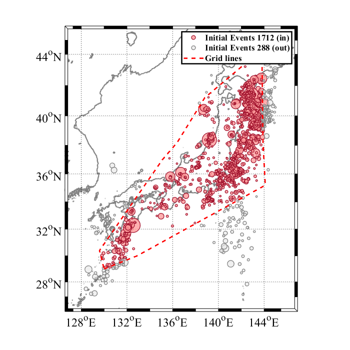
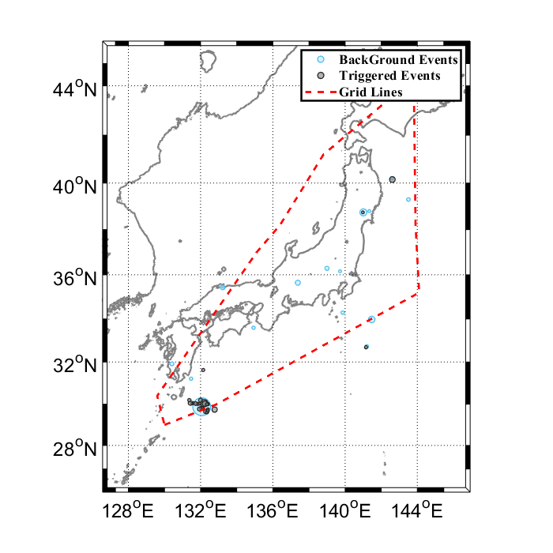
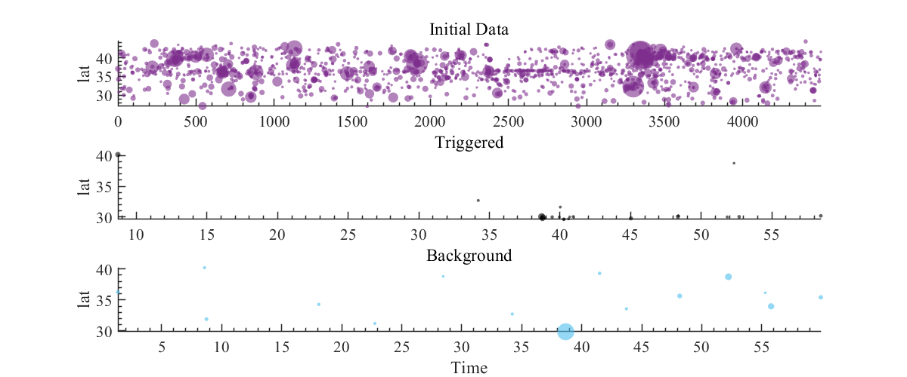
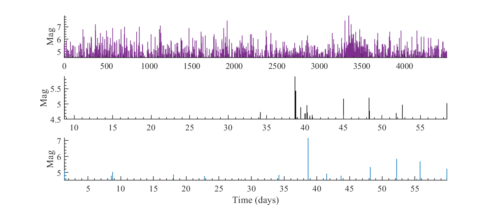
Writing In Catalog
[T1,T2,T3]=Space_SimulateWriteIn(Incat,Loopcata);
Forecasting Procedure loading
Foretime=60; Nsmp=5e3; Sample=Space_SimulateForecast(Nsmp,Foretime,Fai,paramNew,Region);
Forecasting Procedure is starting, wait a moment >>> 100 / 5000 >>> 200 / 5000 >>> 300 / 5000 >>> 400 / 5000 >>> 500 / 5000 >>> 600 / 5000 >>> 700 / 5000 >>> 800 / 5000 >>> 900 / 5000 >>> 1000 / 5000 >>> 1100 / 5000 >>> 1200 / 5000 >>> 1300 / 5000 >>> 1400 / 5000 >>> 1500 / 5000 >>> 1600 / 5000 >>> 1700 / 5000 >>> 1800 / 5000 >>> 1900 / 5000 >>> 2000 / 5000 >>> 2100 / 5000 >>> 2200 / 5000 >>> 2300 / 5000 >>> 2400 / 5000 >>> 2500 / 5000 >>> 2600 / 5000 >>> 2700 / 5000 >>> 2800 / 5000 >>> 2900 / 5000 >>> 3000 / 5000 >>> 3100 / 5000 >>> 3200 / 5000 >>> 3300 / 5000 >>> 3400 / 5000 >>> 3500 / 5000 >>> 3600 / 5000 >>> 3700 / 5000 >>> 3800 / 5000 >>> 3900 / 5000 >>> 4000 / 5000 >>> 4100 / 5000 >>> 4200 / 5000 >>> 4300 / 5000 >>> 4400 / 5000 >>> 4500 / 5000 >>> 4600 / 5000 >>> 4700 / 5000 >>> 4800 / 5000 >>> 4900 / 5000 >>> 5000 / 5000 历时 6.787372 秒。 ================ Ending =================
| Forecasting Mapping |
Space_SimulateForecastMapping(Nsmp,Sample(:,3),Foretime)
In 60.00 Time-span with 5000 Samples, obtained: Mean= 29.1 std= 12.4 By using Histcouts Events= 24 By using kernel estimation Events= 23 Finally the Number Expectation=29.05 Finally the Occurrence Expectation=100.00 % =================================================
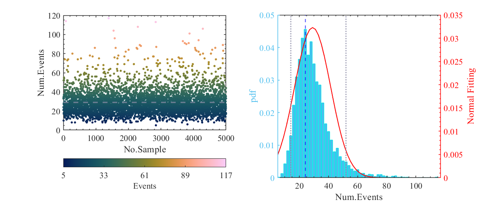
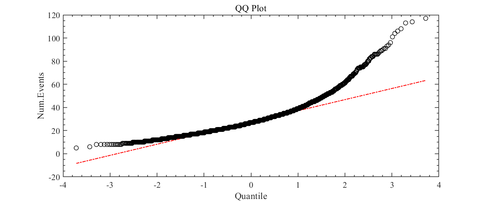
Some debates (Backevents)
Space_Simulate_TrigAbility(Foretime,paramNew,Incat,Region)
Followed Poisson Process, Triggered :1323 events Theoretical there are :1313.05 events And Finally After the selecting of Time and Area, Actually we get :18 events

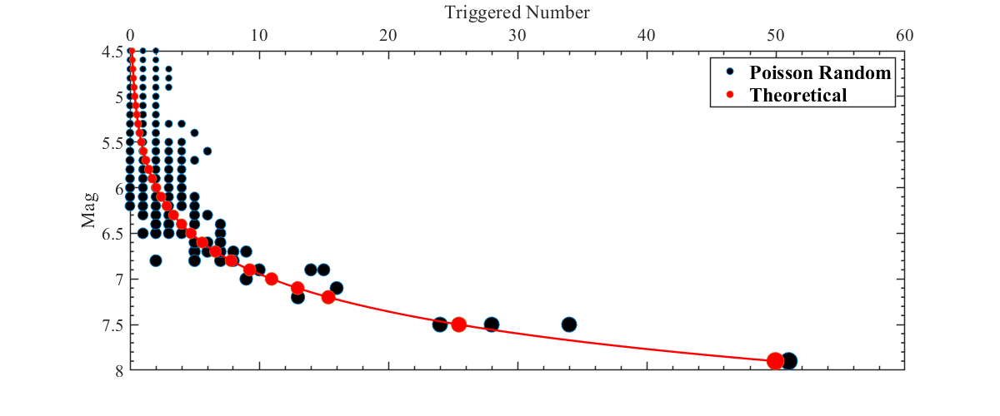